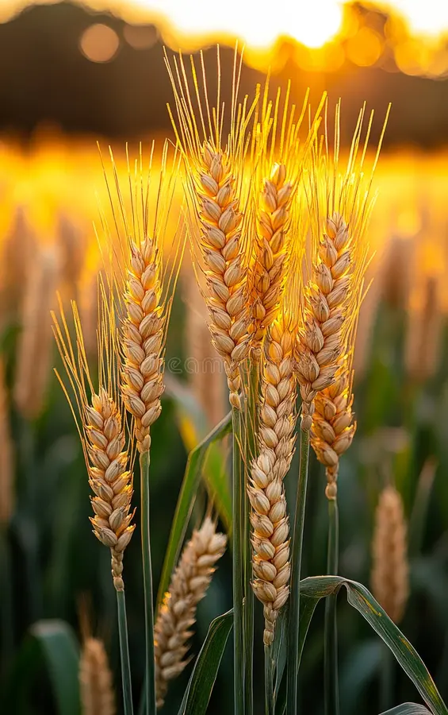
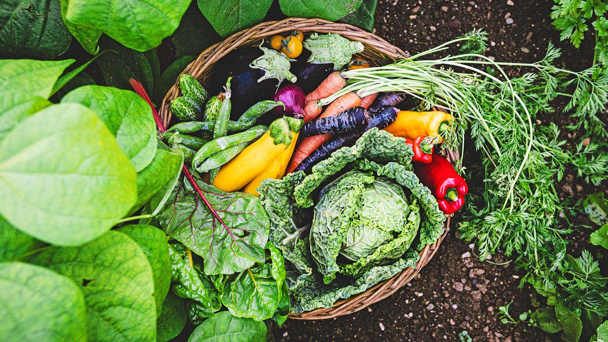
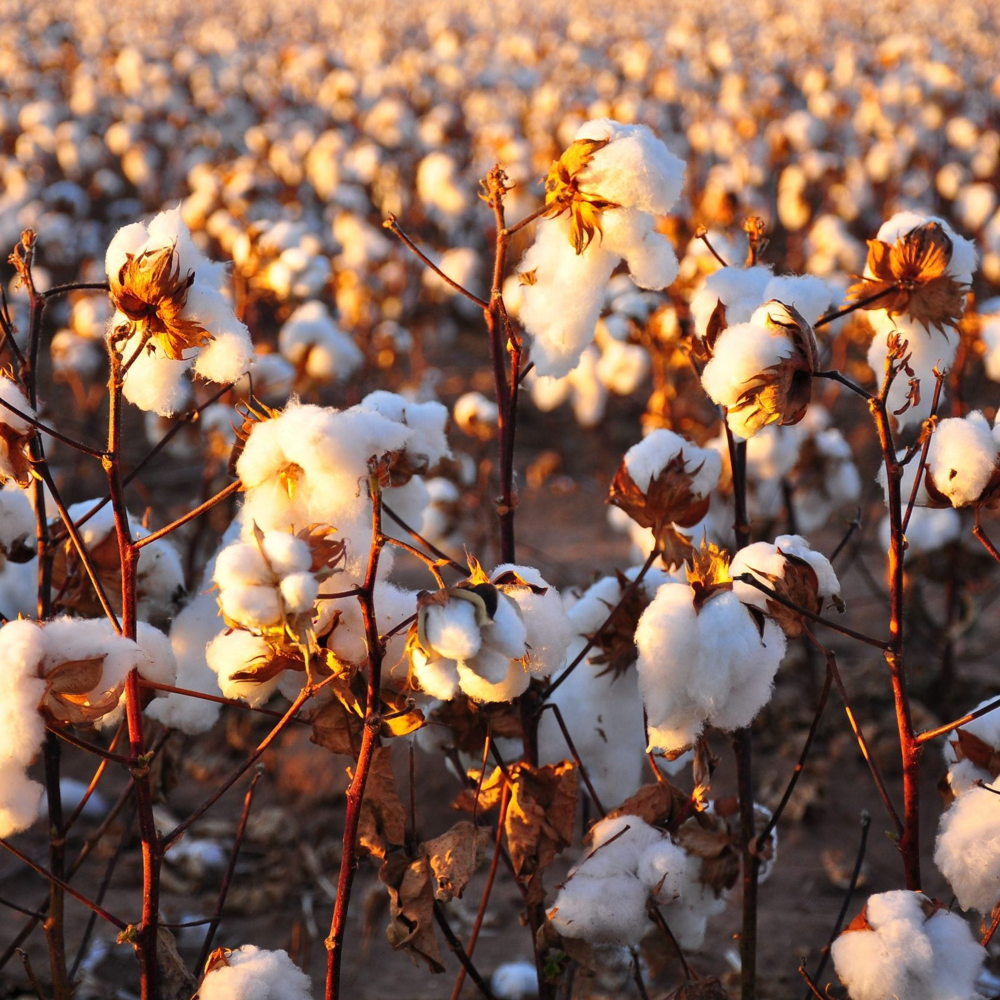

Paddy is one of the most cultivated crops in our village, requiring a well-irrigated environment and dedicated care from our farmers.

Wheat is grown in large fields, providing a staple food source. Farmers carefully monitor the seasons to ensure a healthy yield.

Our village is known for its fresh vegetables, including tomatoes, brinjals, and green chilies, cultivated using organic methods.

Cotton is a significant cash crop, requiring skillful farming techniques to ensure high-quality fiber production.